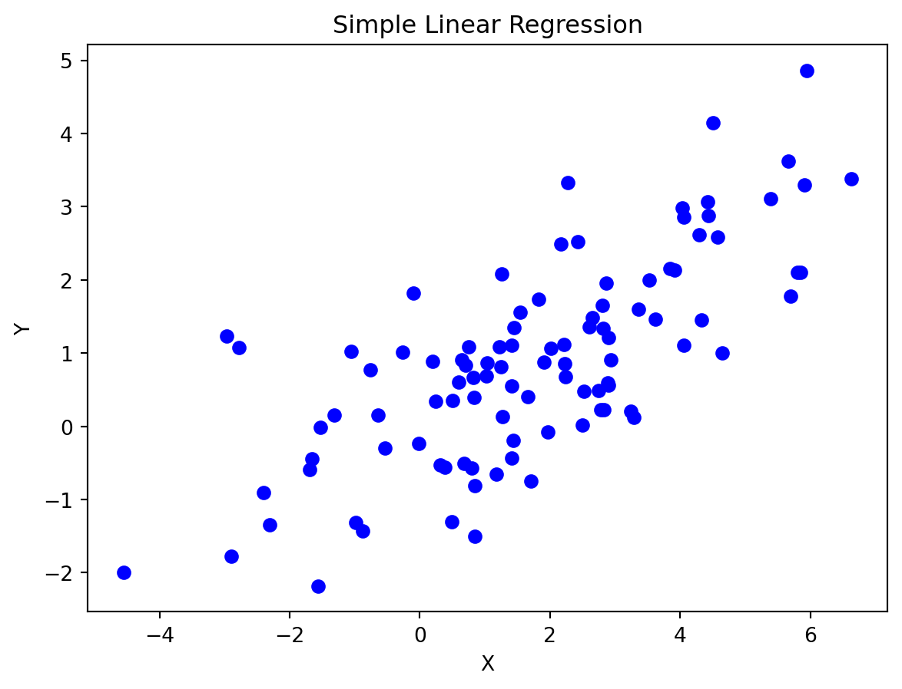
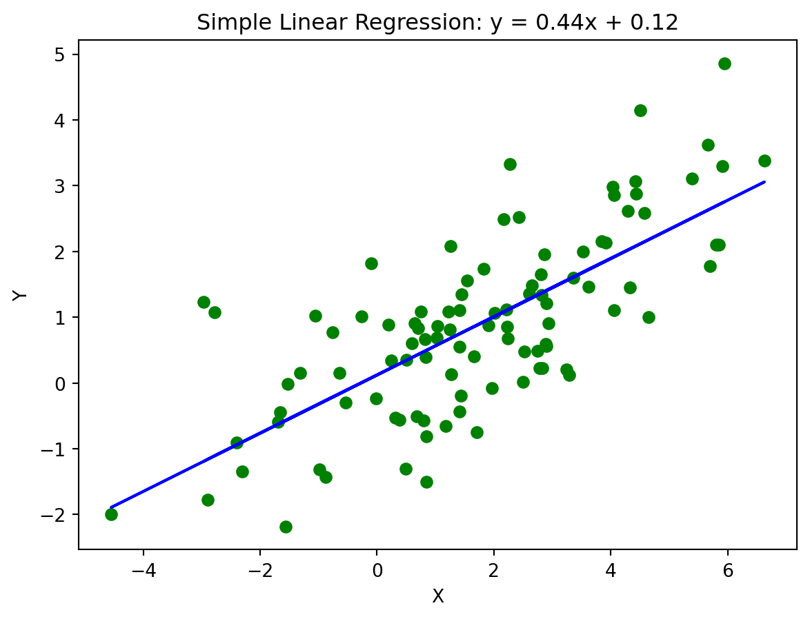
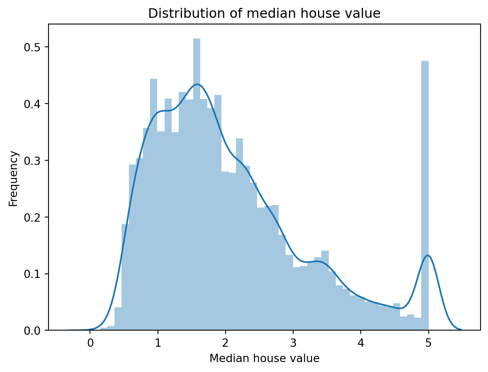
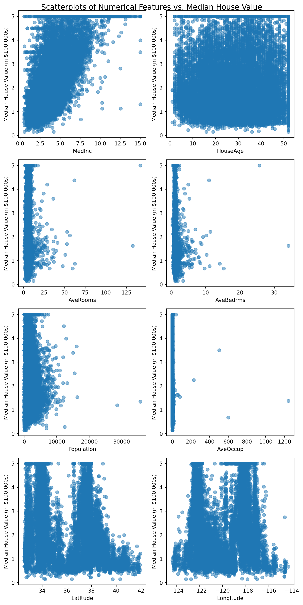
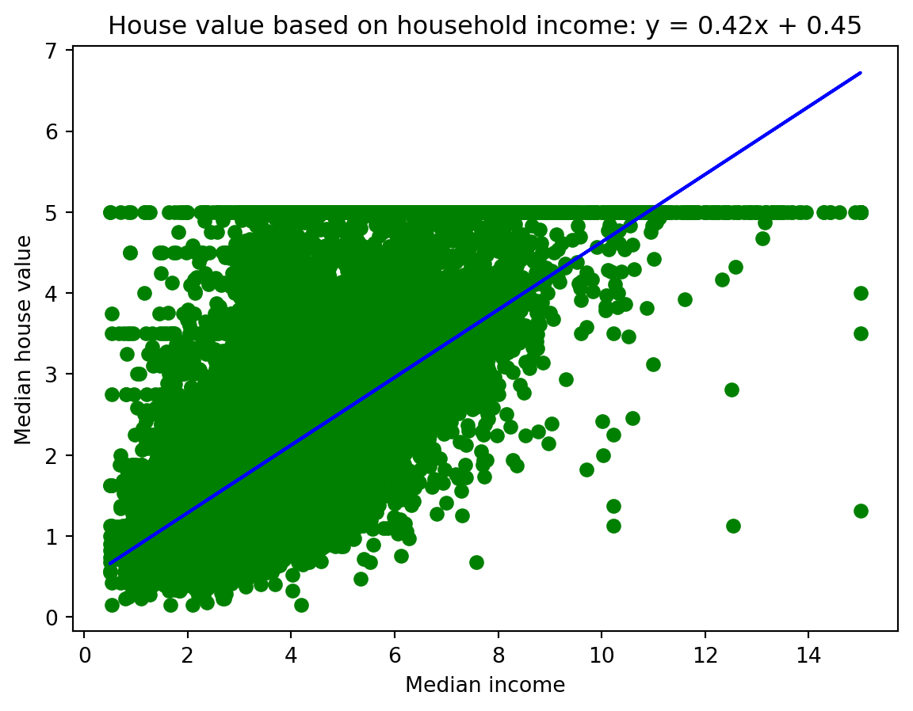
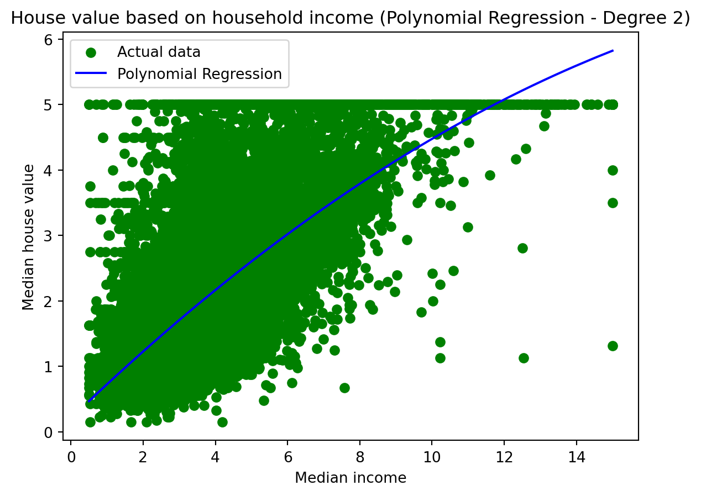
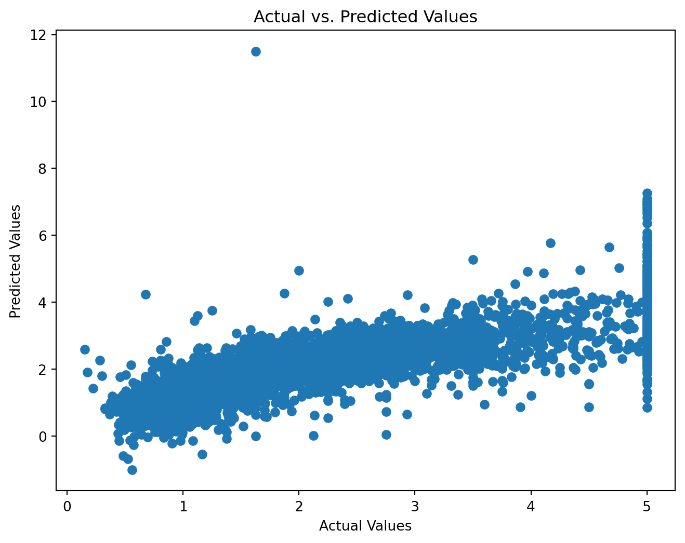

This is a blog post demonstrating linear and nonlinear regression.
Regression
code
Author
Jonathan West
Published
November 23, 2023
Introduction
Linear and nonlinear regression are important foundational techniques in machine learning and statistics used to model the relationship between independent and dependent variables in data. Linear regression is an approach to model the relationship between a development variable and one or more explanatory variables by fitting a linear equation to observed data. Nonlinear regression is a form of regression analysis in which data is fit to a model and then expressed as a mathematical function. Nonlinear regression allows for more complex relationships between variables, and is essential for identifying and modeling patterns in the data that are nonlinear.
In today’s blog post, we will be exploring linear and nonlinear regression using Python, with the scikit-learn California housing dataset.
Linear regression
As mentioned above, linear regression is a linear approach to modeling the relationship between a development variable and one or more explanatory variables. We can use linear regression to predict the value of future dependent variable observations, by modeling on recorded data.
Let’s start by conducting simple linear regression on some randomly generated data. We will use the numpy library to create a dataset randomly distributed around the line `y = 2.5x + 1.
Code
import numpy as npimport matplotlib.pyplot as pltfrom sklearn.linear_model import LinearRegression# Generate sample datanp.random.seed(42)X =2.5* np.random.randn(100) +2# Array of 100 values centered at 2 stddev = 3y =0.5* X + np.random.randn(100) # Linear equation y = 0.5x, with added random noiseplt.scatter(X, y, color='blue')plt.title('Simple Linear Regression')plt.xlabel('X')plt.ylabel('Y')plt.show()

Here we have generated a dataset of 100 points, with a linear relationship y = 0.5x - 3, and random noise added to the data. Now we will conduct simple linear regression to fit a line to the data, and make predictions.
# Create a linear regression model and fit it to the data# Find means of x & yx_mean = np.mean(X)y_mean = np.mean(y)# Calculate terms needed for the numerator and denominator of predicted slope numerator = np.sum((X - x_mean) * (y - y_mean))denominator = np.sum((X - x_mean) **2)# Calculate the linear equation coefficientsslope = numerator / denominatorintercept = y_mean - (slope * x_mean)# Create predicted liney_pred = slope * X + intercept# Plot the data points and the predicted lineplt.scatter(X, y, color='green')label =f'y = {slope:.2f}x + {intercept:.2f}'plt.plot(X, y_pred, color='blue')plt.title('Simple Linear Regression: '+ label)plt.xlabel('X')plt.ylabel('Y')plt.show()

We can see that the line of best fit is very close to the original line, and the predicted line is a good fit for the data. This is a simple toy example of linear regression, which is based in basic algebra and uses the least squares method to find the line of best fit. The example worked quite nicely because the data was generated with a linear relationship, with some random noise added. Now, lets use the concept of regression to predict the median house value in Californian districts, using the California housing dataset.
Code
import seaborn as snsimport matplotlib.pyplot as pltimport pandas as pdfrom sklearn.datasets import fetch_california_housinghousing_data = fetch_california_housing()hd = pd.DataFrame(housing_data.data, columns=housing_data.feature_names)hd[housing_data.target_names[0]] = housing_data.target # Include target variable in dataframe: median house value# Display first 5 rows of datahd.head()
MedInc
HouseAge
AveRooms
AveBedrms
Population
AveOccup
Latitude
Longitude
MedHouseVal
0
8.3252
41.0
6.984127
1.023810
322.0
2.555556
37.88
-122.23
4.526
1
8.3014
21.0
6.238137
0.971880
2401.0
2.109842
37.86
-122.22
3.585
2
7.2574
52.0
8.288136
1.073446
496.0
2.802260
37.85
-122.24
3.521
3
5.6431
52.0
5.817352
1.073059
558.0
2.547945
37.85
-122.25
3.413
4
3.8462
52.0
6.281853
1.081081
565.0
2.181467
37.85
-122.25
3.422
As usual, we will start by exploring the data. We can see that there are 8 features, and 1 target variable: median house value. Our goal is to predict the median house value based on the other features. Lets start by looking at the distribution of the target variable, median house value in hundreds of thousands of dollars.
# Plot the distribution of the target variablesns.distplot(hd[housing_data.target_names[0]])plt.title('Distribution of median house value')plt.xlabel('Median house value')plt.ylabel('Frequency')plt.show()
/tmp/ipykernel_13195/3123216598.py:2: UserWarning:
`distplot` is a deprecated function and will be removed in seaborn v0.14.0.
Please adapt your code to use either `displot` (a figure-level function with
similar flexibility) or `histplot` (an axes-level function for histograms).
For a guide to updating your code to use the new functions, please see
https://gist.github.com/mwaskom/de44147ed2974457ad6372750bbe5751
sns.distplot(hd[housing_data.target_names[0]])

The median house value is distributed roughly normally, with a mean of around 2.1 and a slight right skew. Now lets look at the correlation between the target variable and the other features. We will create scatterplots of the target variable against each feature, and calculate the correlation coefficient.
# Assuming df is your DataFrame with the 9 numerical features# and "MedHouseValue" is the target feature# Select the 8 numerical features you want to plotfeatures_to_plot = housing_data.feature_names# Create a new figure with 8 subplotsfig, axes = plt.subplots(4, 2, figsize=(8, 16))fig.suptitle("Scatterplots of Numerical Features vs. Median House Value", size=14)# Flatten the 2D array of subplots into a 1D arrayaxes = axes.flatten()# Loop through the selected features and create scatterplotsfor i, feature inenumerate(features_to_plot): ax = axes[i] ax.scatter(hd[feature], hd["MedHouseVal"], alpha=0.5) ax.set_xlabel(feature) ax.set_ylabel("Median House Value (in $100,000s)")# Adjust the layout and displayplt.tight_layout()plt.show()

As we can see from these graphs, most of the features lack a strong linear relationship with the target variable. The strongest linear relationship is between median income and median house value, which makes sense. Higher income areas tend to have higher house prices.
In any case, lets use linear regression to predict the median house value based on median income, which seems to be the most promising feature.
from sklearn.linear_model import LinearRegression# Simple linear regressionX = hd['MedInc'].valuesy = hd['MedHouseVal'].values# reshape XX = X.reshape(-1, 1)# Create linear regression model & fit to datamodel = LinearRegression()model.fit(X, y)# Obtain equation coefficients, & predict y valuesslope = model.coef_intercept = model.intercept_y_pred = model.predict(X)# Display our resultsplt.scatter(X, y, color='green') # actual pointsplt.plot(X, y_pred, color='blue') # predicted lineplt.title('House value based on household income: '+f'y = {slope[0]:.2f}x + {intercept:.2f}')plt.xlabel('Median income')plt.ylabel('Median house value')plt.show()

As we can see, the line of best fit roughly correlates to the data, but there are many outliers. Let’s calculate the mean squared error to see how well our model fits the data.
In this case the mean squared error is relatively high, which we could have expected simply by looking at the graph. Perhaps the data is not linearly related, and we should try a nonlinear regression model instead. We can now move on to nonlinear regression.
Nonlinear regression
Nonlinear regression is a form of regression analysis in which data is fit to a model and then expressed as a mathematical function. It is a fundamental concept in machine learning, and is used to model complex relationships between variables.
Let’s apply nonlinear regression to the California housing dataset, and see if we can improve our predictions of median house value.
from sklearn.preprocessing import PolynomialFeatures# Obtain data againX2 = hd['MedInc'].valuesy2 = hd['MedHouseVal'].values# Reshape XX2 = X2.reshape(-1, 1)# Create Polynomial Featuresdegree =2# You can adjust the degree of the polynomialdef show_nonlin_regression(X, y, degree): poly_features = PolynomialFeatures(degree=degree) X_poly = poly_features.fit_transform(X)# Create and fit Polynomial Regression model poly_model = LinearRegression() poly_model.fit(X_poly, y)# Predict y values y_pred = poly_model.predict(X_poly)# Sort X and y_pred for better visualization sort_idx = np.argsort(X[:, 0]) X_sorted = X[sort_idx] y_pred_sorted = y_pred[sort_idx]# Display results plt.scatter(X, y, color='green', label='Actual data') plt.plot(X_sorted, y_pred_sorted, color='blue', label='Polynomial Regression') plt.title(f'House value based on household income (Polynomial Regression - Degree {degree})') plt.xlabel('Median income') plt.ylabel('Median house value') plt.legend() plt.show()return y_predy_pred2 = show_nonlin_regression(X2, y2, degree)

This time it appears the regression model fits the data slightly better, but not by much.
Yet again, the model doesn’t fit the data incredibly well, and the mean squared error is still quite high. Additionally, it appears that the model is begginning to overfit the data, as the line of best fit is beginning to curve too much to fit the data. It doesn’t make sense for very high income areas to have somewhat lower house prices, yet the model predicts this. With simple regression it is difficult to model the relationship between median income and median house value, as there are many other factors that affect house prices. The variance in house prices is likely due to other factors, such as location, house size, and age of the house. However, we have still illustrated how linear and nonlinear regression can be applied to predict the value of future dependent variable observations, by modeling on recorded data.
Lastly, let’s try to predict the median house value based on the other features, using multiple linear regression.
from sklearn.model_selection import train_test_splitfrom sklearn.metrics import mean_squared_error, r2_score# Prepare feature matrix and target X = hd.drop(columns=['MedHouseVal']) # Use all columns except 'MedHouseVal' as featuresy = hd['MedHouseVal']# Split dataset into training and testing setsX_train, X_test, y_train, y_test = train_test_split(X, y, test_size=0.2, random_state=42)# Create and fit multiple linear regression modelmodel = LinearRegression()model.fit(X_train, y_train)# Interpret the model coefficientscoefficients = pd.DataFrame({'Feature': X_train.columns, 'Coefficient': model.coef_})intercept = model.intercept_print("Intercept:", intercept)print("Coefficients:")print(coefficients)# Make predictions on the test sety_pred = model.predict(X_test)# Evaluate the modelmse = mean_squared_error(y_test, y_pred)r2 = r2_score(y_test, y_pred)print("Mean Squared Error (MSE):", mse)print("R-squared (R2) Score:", r2)
As we can see, the multiple linear regression model fits the data much better than the simple linear regression model, and the mean squared error is much lower. Incorporating multiple features allows us to more closely model the real life relationships between these variables. Now lets use a final visualization for the work we have done.
# Plot actual vs predicted valsplt.figure(figsize=(8, 6))plt.scatter(y_test, y_pred)plt.xlabel('Actual Values')plt.ylabel('Predicted Values')plt.title('Actual vs. Predicted Values')plt.show()

There does appear to be a linear relationship between the actual and predicted values, following the equation y=x. This is a good sign, as it means our model is predicting the values reasonably. However we can see that the success of the regression was still limited by our choice of model, data features, and potentially outliers in the data.
Conclusion
In this blog post we have explored linear and nonlinear regression using Python, with the scikit-learn California housing dataset. Linear regression is a linear approach to modeling the relationship between a development variable and one or more explanatory variables, while nonlinear regression is a more general regression analysis in which data is fit to a model and then expressed as a mathematical function. Regression is a foundational topic to machine learning, and I hope this blog post has helped you understand some of the basics of regression and inspired you to learn more.
---title: "Linear & Nonlinear regression"author: "Jonathan West"date: "2023-11-23"categories: [Regression, code]description: "This is a blog post demonstrating linear and nonlinear regression."format: html: code-tools: true---## IntroductionLinear and nonlinear regression are important foundational techniques in machine learning and statistics used to model the relationship between independent and dependent variables in data. Linear regression is an approach to model the relationship between a development variable and one or more explanatory variables by fitting a linear equation to observed data. Nonlinear regression is a form of regression analysis in which data is fit to a model and then expressed as a mathematical function. Nonlinear regression allows for more complex relationships between variables, and is essential for identifying and modeling patterns in the data that are nonlinear. In today's blog post, we will be exploring linear and nonlinear regression using Python, with the scikit-learn California housing dataset.## Linear regressionAs mentioned above, linear regression is a linear approach to modeling the relationship between a development variable and one or more explanatory variables.We can use linear regression to predict the value of future dependent variable observations, by modeling on recorded data.Let's start by conducting simple linear regression on some randomly generated data. We will use the `numpy` library to create a dataset randomly distributed around the line `y = 2.5x + 1.```{python}#| code-fold: trueimport numpy as npimport matplotlib.pyplot as pltfrom sklearn.linear_model import LinearRegression# Generate sample datanp.random.seed(42)X =2.5* np.random.randn(100) +2# Array of 100 values centered at 2 stddev = 3y =0.5* X + np.random.randn(100) # Linear equation y = 0.5x, with added random noiseplt.scatter(X, y, color='blue')plt.title('Simple Linear Regression')plt.xlabel('X')plt.ylabel('Y')plt.show()```Here we have generated a dataset of 100 points, with a linear relationship y = 0.5x - 3, and random noise added to the data.Now we will conduct simple linear regression to fit a line to the data, and make predictions.```{python}# Create a linear regression model and fit it to the data# Find means of x & yx_mean = np.mean(X)y_mean = np.mean(y)# Calculate terms needed for the numerator and denominator of predicted slope numerator = np.sum((X - x_mean) * (y - y_mean))denominator = np.sum((X - x_mean) **2)# Calculate the linear equation coefficientsslope = numerator / denominatorintercept = y_mean - (slope * x_mean)# Create predicted liney_pred = slope * X + intercept# Plot the data points and the predicted lineplt.scatter(X, y, color='green')label =f'y = {slope:.2f}x + {intercept:.2f}'plt.plot(X, y_pred, color='blue')plt.title('Simple Linear Regression: '+ label)plt.xlabel('X')plt.ylabel('Y')plt.show()```We can see that the line of best fit is very close to the original line, and the predicted line is a good fit for the data. This is a simple toy example of linear regression, which is based in basic algebra and uses the least squares method to find the line of best fit.The example worked quite nicely because the data was generated with a linear relationship, with some random noise added.Now, lets use the concept of regression to predict the median house value in Californian districts, using the California housing dataset.```{python}#| code-fold: trueimport seaborn as snsimport matplotlib.pyplot as pltimport pandas as pdfrom sklearn.datasets import fetch_california_housinghousing_data = fetch_california_housing()hd = pd.DataFrame(housing_data.data, columns=housing_data.feature_names)hd[housing_data.target_names[0]] = housing_data.target # Include target variable in dataframe: median house value# Display first 5 rows of datahd.head()```As usual, we will start by exploring the data. We can see that there are 8 features, and 1 target variable: median house value. Our goal is to predict the median house value based on the other features.Lets start by looking at the distribution of the target variable, median house value in hundreds of thousands of dollars.```{python}# Plot the distribution of the target variablesns.distplot(hd[housing_data.target_names[0]])plt.title('Distribution of median house value')plt.xlabel('Median house value')plt.ylabel('Frequency')plt.show()```The median house value is distributed roughly normally, with a mean of around 2.1 and a slight right skew.Now lets look at the correlation between the target variable and the other features.We will create scatterplots of the target variable against each feature, and calculate the correlation coefficient.```{python}# Assuming df is your DataFrame with the 9 numerical features# and "MedHouseValue" is the target feature# Select the 8 numerical features you want to plotfeatures_to_plot = housing_data.feature_names# Create a new figure with 8 subplotsfig, axes = plt.subplots(4, 2, figsize=(8, 16))fig.suptitle("Scatterplots of Numerical Features vs. Median House Value", size=14)# Flatten the 2D array of subplots into a 1D arrayaxes = axes.flatten()# Loop through the selected features and create scatterplotsfor i, feature inenumerate(features_to_plot): ax = axes[i] ax.scatter(hd[feature], hd["MedHouseVal"], alpha=0.5) ax.set_xlabel(feature) ax.set_ylabel("Median House Value (in $100,000s)")# Adjust the layout and displayplt.tight_layout()plt.show()```As we can see from these graphs, most of the features lack a strong linear relationship with the target variable. The strongest linear relationship is between median income and median house value, which makes sense. Higher income areas tend to have higher house prices.In any case, lets use linear regression to predict the median house value based on median income, which seems to be the most promising feature.```{python}from sklearn.linear_model import LinearRegression# Simple linear regressionX = hd['MedInc'].valuesy = hd['MedHouseVal'].values# reshape XX = X.reshape(-1, 1)# Create linear regression model & fit to datamodel = LinearRegression()model.fit(X, y)# Obtain equation coefficients, & predict y valuesslope = model.coef_intercept = model.intercept_y_pred = model.predict(X)# Display our resultsplt.scatter(X, y, color='green') # actual pointsplt.plot(X, y_pred, color='blue') # predicted lineplt.title('House value based on household income: '+f'y = {slope[0]:.2f}x + {intercept:.2f}')plt.xlabel('Median income')plt.ylabel('Median house value')plt.show()```As we can see, the line of best fit roughly correlates to the data, but there are many outliers. Let's calculate the mean squared error to see how well our model fits the data.```{python}# Compute mean squared errormse = np.mean((y_pred - y) **2)print(f'Mean squared error: {mse}')```In this case the mean squared error is relatively high, which we could have expected simply by looking at the graph. Perhaps the data is not linearly related, and we should try a nonlinear regression model instead. We can now move on to nonlinear regression.## Nonlinear regressionNonlinear regression is a form of regression analysis in which data is fit to a model and then expressed as a mathematical function. It is a fundamental concept in machine learning, and is used to model complex relationships between variables.Let's apply nonlinear regression to the California housing dataset, and see if we can improve our predictions of median house value.```{python}from sklearn.preprocessing import PolynomialFeatures# Obtain data againX2 = hd['MedInc'].valuesy2 = hd['MedHouseVal'].values# Reshape XX2 = X2.reshape(-1, 1)# Create Polynomial Featuresdegree =2# You can adjust the degree of the polynomialdef show_nonlin_regression(X, y, degree): poly_features = PolynomialFeatures(degree=degree) X_poly = poly_features.fit_transform(X)# Create and fit Polynomial Regression model poly_model = LinearRegression() poly_model.fit(X_poly, y)# Predict y values y_pred = poly_model.predict(X_poly)# Sort X and y_pred for better visualization sort_idx = np.argsort(X[:, 0]) X_sorted = X[sort_idx] y_pred_sorted = y_pred[sort_idx]# Display results plt.scatter(X, y, color='green', label='Actual data') plt.plot(X_sorted, y_pred_sorted, color='blue', label='Polynomial Regression') plt.title(f'House value based on household income (Polynomial Regression - Degree {degree})') plt.xlabel('Median income') plt.ylabel('Median house value') plt.legend() plt.show()return y_predy_pred2 = show_nonlin_regression(X2, y2, degree)```This time it appears the regression model fits the data slightly better, but not by much.```{python}# Compute mean squared errormse = np.mean((y_pred2 - y2) **2)print(f'Mean squared error: {mse}')```As you can see, the mean squared error is slightly lower than the linear regression model, but still quite high. Let's try a higher degree polynomial.```{python}# Obtain data againX3 = hd['MedInc'].valuesy3 = hd['MedHouseVal'].valuesX3 = X3.reshape(-1, 1)y_pred3 = show_nonlin_regression(X3, y3, 3)``````{python}# Compute mean squared errormse = np.mean((y_pred2 - y2) **2)print(f'Mean squared error: {mse}')```Yet again, the model doesn't fit the data incredibly well, and the mean squared error is still quite high. Additionally, it appears that the model is begginning to overfit the data, as the line of best fit is beginning to curve too much to fit the data.It doesn't make sense for very high income areas to have somewhat lower house prices, yet the model predicts this.With simple regression it is difficult to model the relationship between median income and median house value, as there are many other factors that affect house prices. The variance in house prices is likely due to other factors, such as location, house size, and age of the house.However, we have still illustrated how linear and nonlinear regression can be applied to predict the value of future dependent variable observations, by modeling on recorded data.Lastly, let's try to predict the median house value based on the other features, using multiple linear regression.```{python}from sklearn.model_selection import train_test_splitfrom sklearn.metrics import mean_squared_error, r2_score# Prepare feature matrix and target X = hd.drop(columns=['MedHouseVal']) # Use all columns except 'MedHouseVal' as featuresy = hd['MedHouseVal']# Split dataset into training and testing setsX_train, X_test, y_train, y_test = train_test_split(X, y, test_size=0.2, random_state=42)# Create and fit multiple linear regression modelmodel = LinearRegression()model.fit(X_train, y_train)# Interpret the model coefficientscoefficients = pd.DataFrame({'Feature': X_train.columns, 'Coefficient': model.coef_})intercept = model.intercept_print("Intercept:", intercept)print("Coefficients:")print(coefficients)# Make predictions on the test sety_pred = model.predict(X_test)# Evaluate the modelmse = mean_squared_error(y_test, y_pred)r2 = r2_score(y_test, y_pred)print("Mean Squared Error (MSE):", mse)print("R-squared (R2) Score:", r2)```As we can see, the multiple linear regression model fits the data much better than the simple linear regression model, and the mean squared error is much lower. Incorporating multiple features allows us to more closely model the real life relationships between these variables.Now lets use a final visualization for the work we have done.```{python}# Plot actual vs predicted valsplt.figure(figsize=(8, 6))plt.scatter(y_test, y_pred)plt.xlabel('Actual Values')plt.ylabel('Predicted Values')plt.title('Actual vs. Predicted Values')plt.show()```There does appear to be a linear relationship between the actual and predicted values, following the equation y=x. This is a good sign, as it means our model is predicting the values reasonably. However we can see that the success of the regression was still limited by our choice of model, data features, and potentially outliers in the data.# ConclusionIn this blog post we have explored linear and nonlinear regression using Python, with the scikit-learn California housing dataset. Linear regression is a linear approach to modeling the relationship between a development variable and one or more explanatory variables, while nonlinear regression is a more general regression analysis in which data is fit to a model and then expressed as a mathematical function. Regression is a foundational topic to machine learning, and I hope this blog post has helped you understand some of the basics of regression and inspired you to learn more.## Sources used1. https://realpython.com/linear-regression-in-python/2. https://pandas.pydata.org/pandas-docs/stable/reference/api/pandas.plotting.scatter_matrix.html3. https://github.com/ageron/handson-ml34. https://www.investopedia.com/terms/m/mlr.asp5. https://medium.com/machine-learning-with-python/multiple-linear-regression-implementation-in-python-2de9b303fc0c